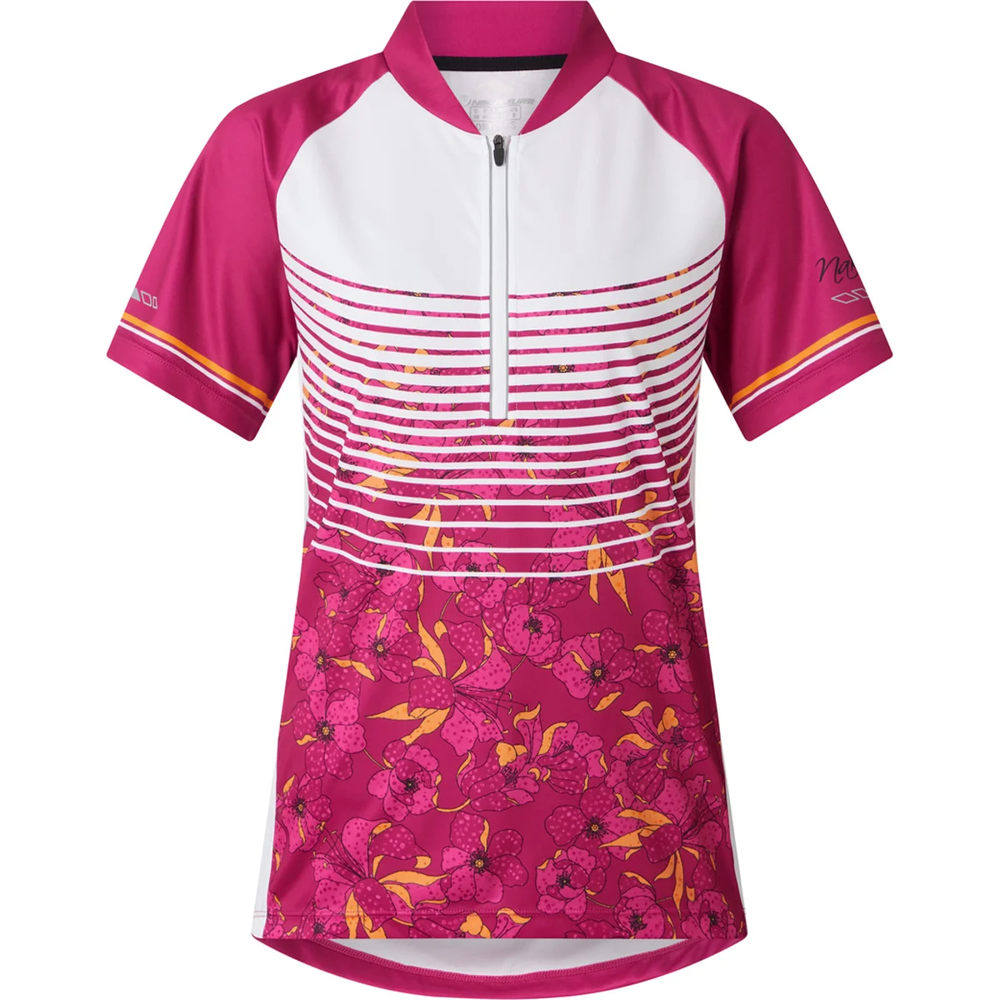
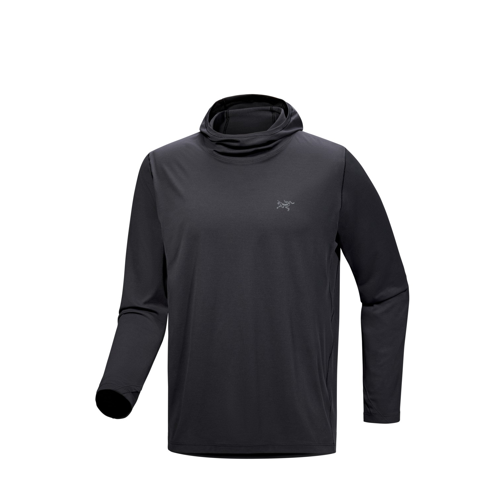
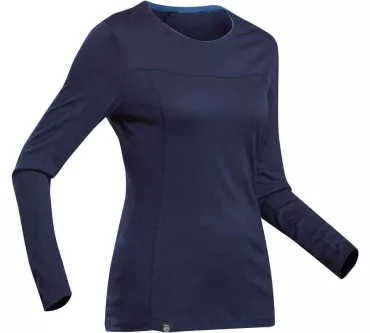
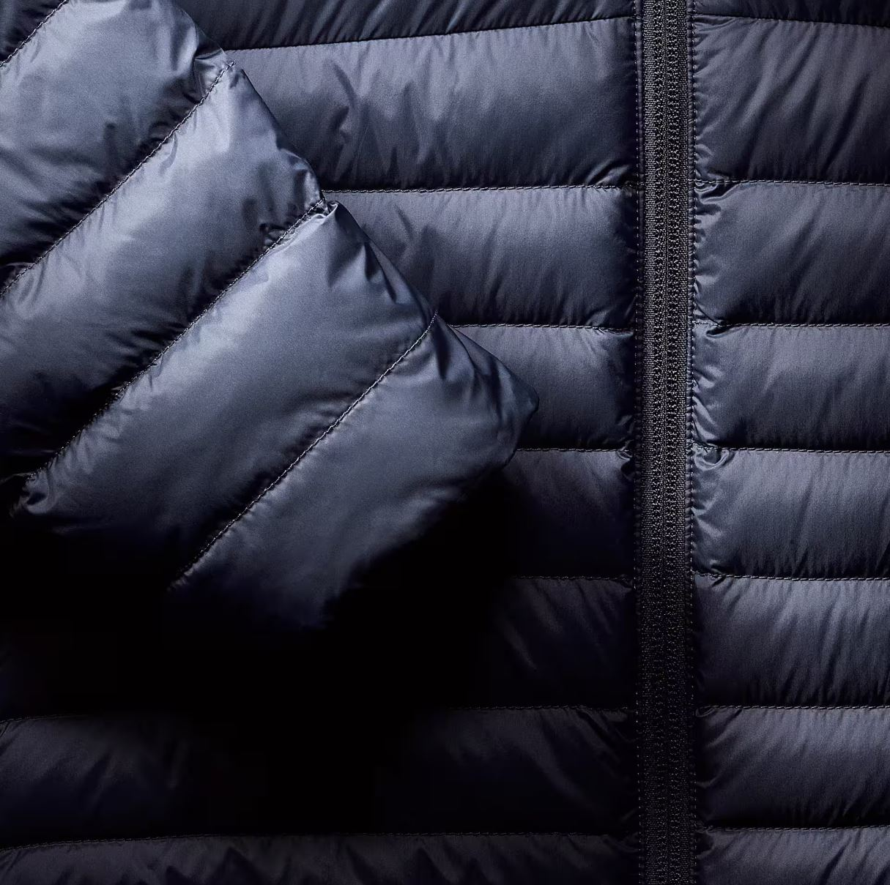
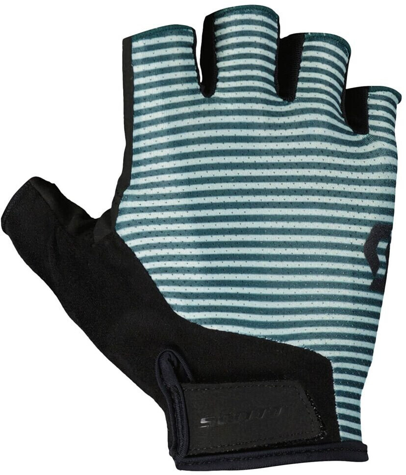
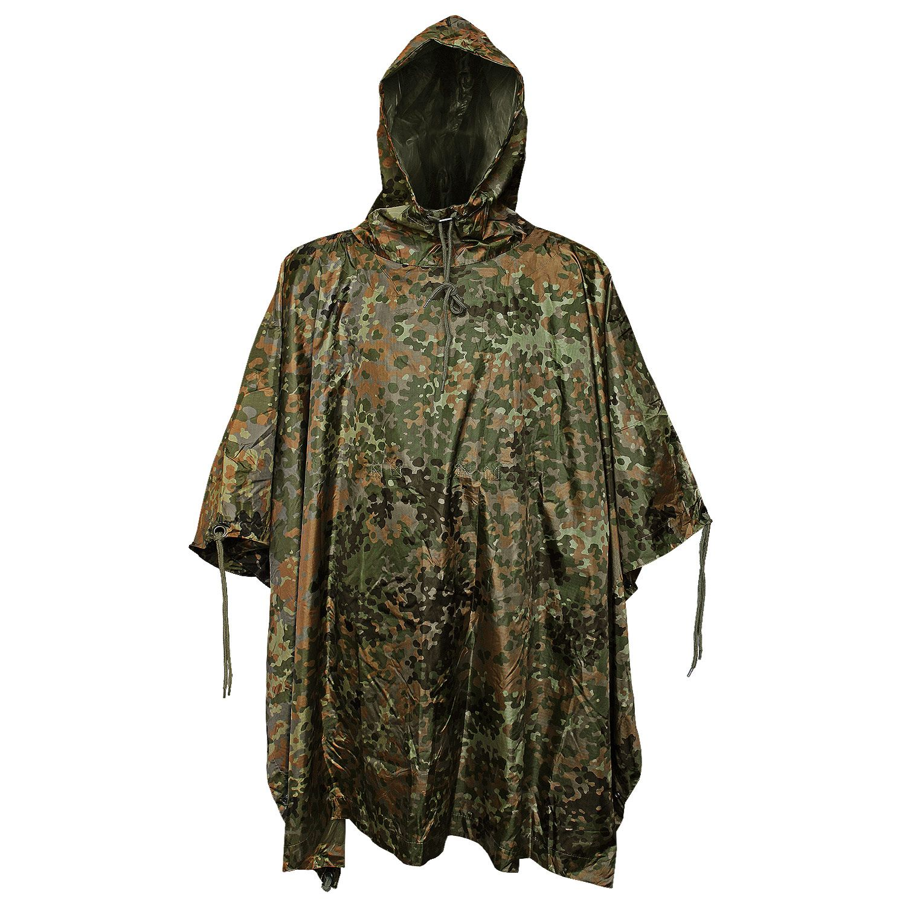
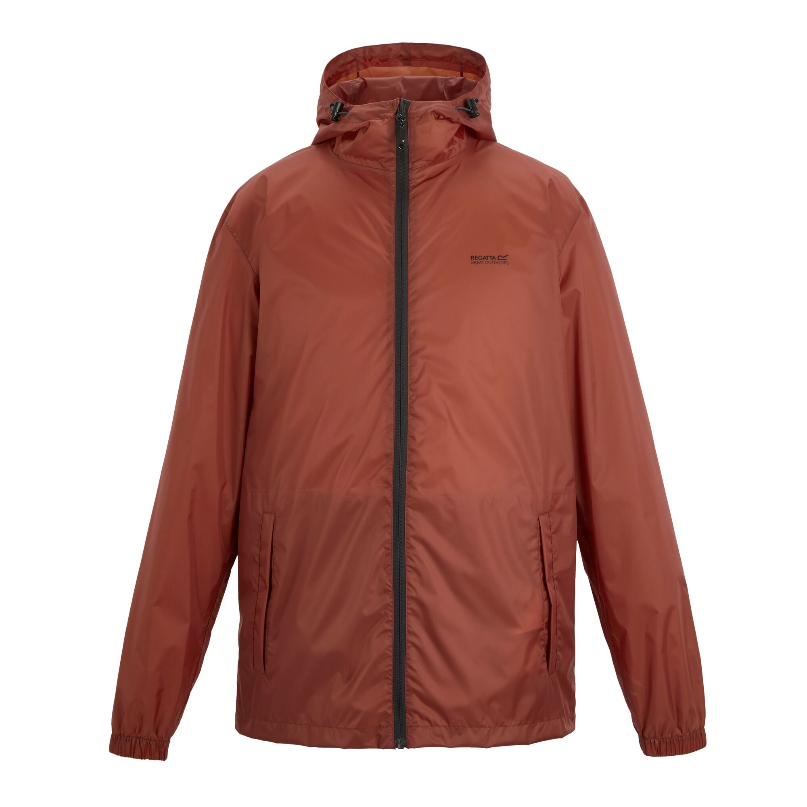
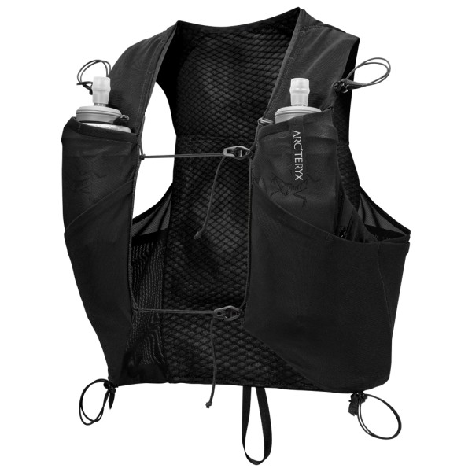

Jersey
Fahrrad Jersey und kurze Hose von der Marke Nakamura. Simpel, luftig und schnell trocknend.
Gemütlich
Sonnen-Hoodie
Laufshirt von Arc'teryx. Schützt den Kopf/Ohren vor starkem Wind und den Oberkörper vor zu hoher Sonneneinstrahlung.
Schützend
Merino
Fürs Schlafen und kältere Abende am Lagerfeuer. Geruchsabweisend.
Leitend
Daunenjacke
Daunenjacke von SIMON. Bis zu Minus 5 Grad Celsius. Super kleines Packmaß, lange Ärmel und eine Kaputze, in der man sich verstecken kann.
Warm
Windjacke
Windrunner Jacke von Helikon-Tex. Gegen zu viel Wind oder einfach über die Daunen oder eine Fleece Jacke ziehen für extra Wärme. Nicht Wasserfest.
Wind
Gel-Handschuhe
Unverzichtbar auf längeren Touren. Man rutscht nicht ab. Keine schmerzen beim zu harten greifen der Fahrrad-Lenker.
Keine Blasen
Bib-Shorts
Bib-Shorts von der Marke Souke. Polster sind schön dick. Shorts sind einfach zu waschen. Durch die Träger sitzen die Shorts besonders gut.
Bequem
Poncho
Mil-Tec Regenponcho. Wenn es wirklich zu viel Regnet. Wurde schon, beim Fahrrad fahren, getestet. Würde ich aber nicht empfehlen. Der Poncho ist etwas schwerer, lässt keine Luft durch und wird sehr warm.
Schutz
Radfahrkappe
Lustige Mützen. Damit der Schweiß nicht wieder in den Augen landet.
Kopf
Regenjacke
Regatta Regenjacke. Kleines Packmaß. Bisher nur auf kurzen Fahrrad Touren getragen.
Schutz
Regenjacke
Beyond Nordic Shelljacke BN302. Glaube, die beste Regenjacke die ich bis jetzt hatte. Zusätzlich mit RECCO ausgestattet.
Schutz
Weste
Eine schöne leichte Weste von Arc'teryx. Platz für 2x 500ml Softflaschen und andere Süßigkeiten. Oder Stangenwurst, Käselaib usw.
Verstauen